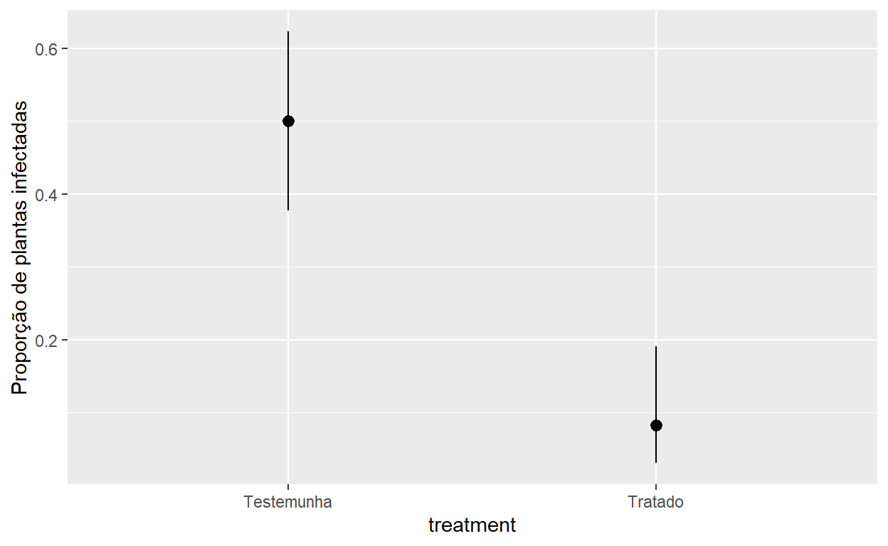
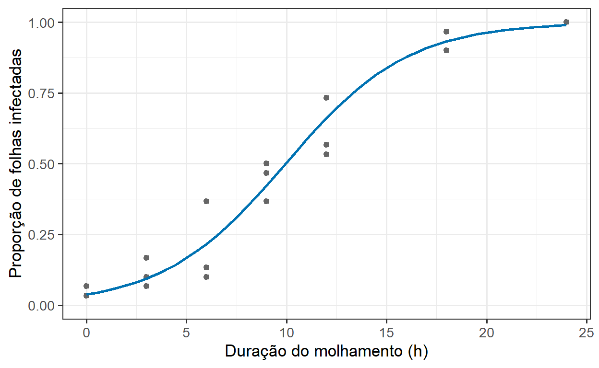
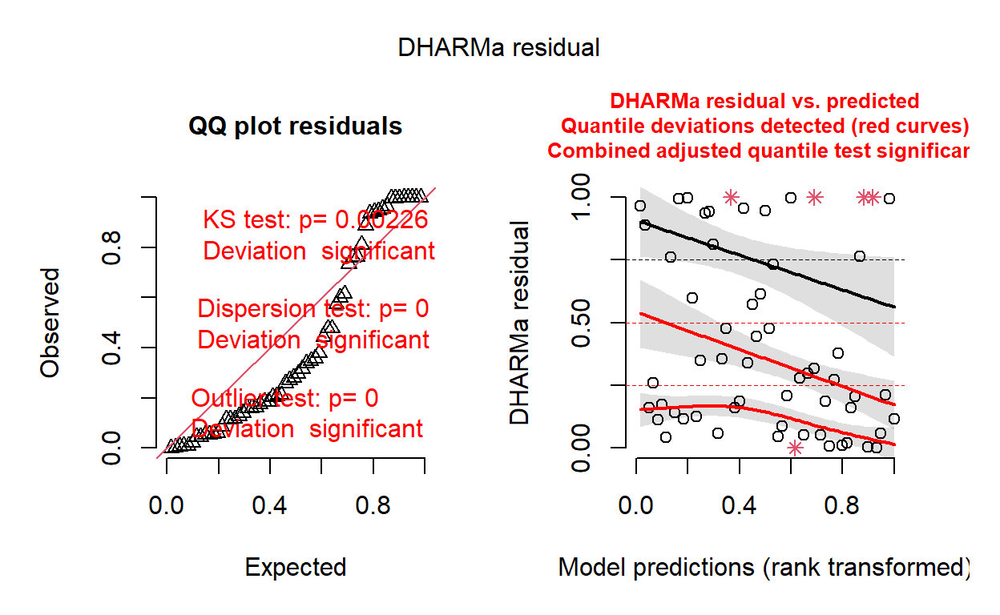
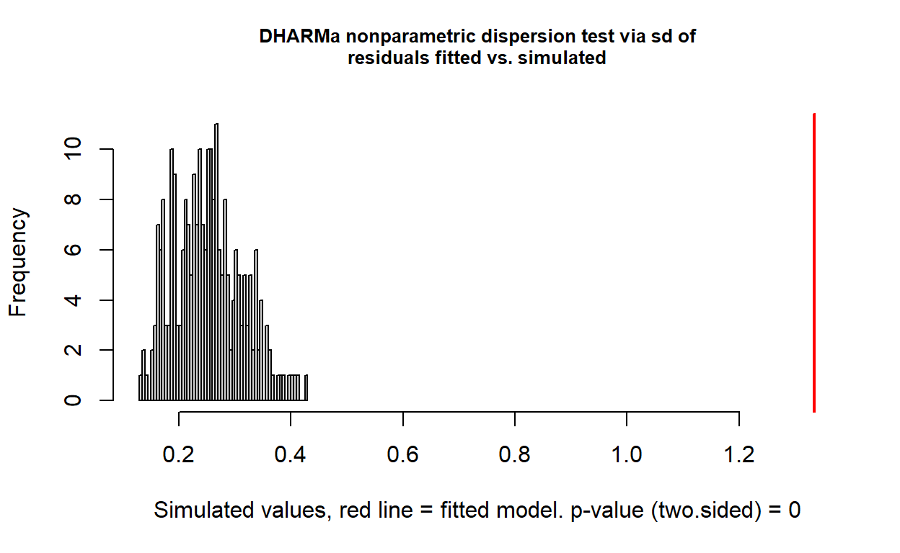

10 Como analisamos dados categóricos, de contagem e de proporção?
10.1 Objetivos de aprendizagem
Importante
Ao concluir este capítulo, o leitor deverá ser capaz de:
- reconhecer respostas binárias, categóricas, ordinais, de contagem e de proporção;
- explicar por que essas respostas violam os pressupostos dos modelos usados nos Capítulos 7 a 9;
- resumir dados categóricos com frequências, proporções e sua incerteza;
- usar testes de qui-quadrado e testes exatos para aderência e para associação entre variáveis categóricas;
- descrever os componentes de um modelo linear generalizado;
- ajustar e interpretar a regressão logística para respostas binárias e binomiais usando razões de chances e probabilidades previstas;
- ajustar e interpretar modelos do tipo Poisson para contagens usando razões de taxas e offsets;
- detectar e tratar a superdispersão;
- distinguir proporções derivadas de contagens de proporções contínuas, como a severidade em porcentagem;
- reconhecer escalas ordinais de doença e os modelos adequados a elas;
- comunicar os resultados na escala da resposta original.
10.2 Por que esses dados são diferentes?
Os modelos dos Capítulos 7 a 9 descrevem uma resposta contínua cuja variabilidade em torno da média é aproximadamente constante e simétrica. Muitas das observações mais comuns em Fitopatologia não se encaixam nessa descrição.
Respostas típicas incluem:
- desfechos binários: uma planta está infectada ou não; uma semente carrega o patógeno ou não; um isolado é resistente ou sensível;
- proporções a partir de contagens: 37 de 50 plantas com sintomas; 120 de 200 esporos germinados; 8 de 30 sementes infectadas;
- contagens: número de lesões por folha, colônias por placa, esporos capturados por dia, insetos por armadilha adesiva;
- categorias nominais: tipo de acasalamento (mating type), espécie, haplótipo, tipo de sintoma;
- categorias ordinais: escalas de severidade com classes ordenadas, como de 0 a 5 ou a escala de Horsfall–Barratt;
- proporções contínuas: porcentagem da área foliar doente.
Essas respostas têm características que importam para a análise:
- são limitadas: uma proporção não pode ser menor que 0 nem maior que 1, e uma contagem não pode ser negativa;
- sua variabilidade depende da média: uma proporção próxima de 0,5 varia mais do que uma próxima de 0 ou 1, e contagens maiores variam mais do que contagens pequenas;
- são frequentemente discretas: as contagens assumem valores inteiros, e os desfechos binários, apenas dois.
Importante
A questão não é como transformar esses dados até que pareçam normais. É qual modelo estatístico descreve como esses dados são gerados.
10.3 Da questão biológica ao estimando
Considere um ensaio de campo em que se registrou o número de plantas com sintomas em cada parcela.
10.3.1 Comparando proporções
Quando a resposta é uma probabilidade, o efeito de um tratamento pode ser expresso de diferentes formas. Se a probabilidade de infecção é \(p_C\) na testemunha e \(p_T\) no tratamento:
- a diferença de riscos é \(p_T - p_C\);
- a razão de riscos é \(p_T / p_C\);
- a razão de chances (odds ratio) é \(\dfrac{p_T / (1 - p_T)}{p_C / (1 - p_C)}\).
A diferença de riscos é a mais intuitiva para decisões práticas; a razão de chances é a escala natural da regressão logística.
10.3.2 Comparando contagens
Quando a resposta é uma contagem, os efeitos geralmente são expressos como razões de taxas: o número de lesões por folha em um tratamento dividido pelo número em outro. Uma razão de taxas de 0,4 significa uma redução de 60%.
Dica
Informe em que escala o efeito é relatado. Uma redução de 10% para 5% de infecção é uma diferença de riscos de −5 pontos percentuais, uma razão de riscos de 0,5 e uma razão de chances de cerca de 0,47. Todas estão corretas; respondem a perguntas ligeiramente diferentes.
10.4 Por que não usar o modelo linear usual?
Ajustar lm() a proporções ou contagens pode produzir:
- proporções previstas abaixo de 0 ou acima de 1, e contagens previstas negativas;
- erros padrão e intervalos de confiança incorretos, porque a variabilidade não é constante;
- efeitos que parecem aditivos em uma escala em que os processos biológicos são multiplicativos.
10.4.1 E as transformações?
A solução tradicional era transformar a resposta — com o arco-seno da raiz quadrada para proporções ou com a raiz quadrada ou o logaritmo para contagens — e depois aplicar a ANOVA. Essas transformações estabilizam aproximadamente a variância, mas:
- os efeitos estimados ficam em uma escala difícil de interpretar;
- a transformação não leva em conta números diferentes de plantas avaliadas por parcela;
- os zeros exigem ajustes arbitrários antes de tomar logaritmos;
- a análise não reflete como os dados foram gerados.
Os modelos lineares generalizados resolvem esses problemas diretamente e hoje estão amplamente disponíveis. As transformações continuam sendo uma aproximação razoável em algumas situações, particularmente para contagens grandes e distantes de zero, mas não devem ser o padrão (ver também a seção “Os dados em porcentagem devem sempre ser transformados?” do Capítulo 7).
10.5 Descrevendo dados categóricos
10.5.1 Tabelas de frequência
O primeiro passo é tabular as observações.
table(plantas$treatment, plantas$infected)
não sim
Testemunha 30 30
Tratado 55 5prop.table(table(plantas$treatment, plantas$infected), margin = 1)
não sim
Testemunha 0.50000000 0.50000000
Tratado 0.91666667 0.0833333310.5.2 Proporções e sua incerteza
Uma proporção estimada a partir de \(n\) observações tem uma incerteza que depende tanto de \(n\) quanto da própria proporção. O intervalo simples \(\hat{p} \pm 1{,}96\sqrt{\hat{p}(1 - \hat{p})/n}\) funciona mal quando \(n\) é pequeno ou \(\hat{p}\) está próximo de 0 ou 1, e pode incluir valores impossíveis. O intervalo de Wilson é uma escolha-padrão melhor.
prop.test(x = 8, n = 30)$conf.int # intervalo de Wilson com correção de continuidade[1] 0.1297544 0.4617278
attr(,"conf.level")
[1] 0.95binom.test(x = 8, n = 30)$conf.int # intervalo exato (Clopper–Pearson)[1] 0.1227948 0.4588937
attr(,"conf.level")
[1] 0.95
Aviso
Nenhuma semente infectada em uma amostra de 30 não mostra que o lote está livre do patógeno. O limite superior do intervalo de confiança de 95% para a taxa de infecção fica em torno de 10% a 12%.
10.5.3 Visualizando dados categóricos
As proporções são mostradas como pontos com intervalos de confiança ou como barras empilhadas. Quando o número de observações difere entre os grupos, mostrar as contagens ou os tamanhos de amostra junto com as proporções ajuda o leitor a julgar a precisão.
library(ggplot2)
ggplot(summary_data, aes(x = treatment, y = prop)) +
geom_pointrange(aes(ymin = lower, ymax = upper)) +
labs(y = "Proporção de plantas infectadas")
10.6 Testes de qui-quadrado e testes exatos
10.6.1 Aderência
Um teste de aderência pergunta se as frequências observadas são compatíveis com proporções esperadas definidas por uma hipótese biológica. Exemplos clássicos em Fitopatologia incluem as razões de segregação de genes de resistência (por exemplo, 3 resistentes : 1 suscetível em uma população F2) e a frequência dos tipos de acasalamento em uma população (1:1 sob acasalamento ao acaso).
observed <- c(resistant = 152, susceptible = 48)
chisq.test(observed, p = c(3/4, 1/4))
Chi-squared test for given probabilities
data: observed
X-squared = 0.10667, df = 1, p-value = 0.74410.6.2 Associação entre duas variáveis categóricas
Um teste de independência pergunta se a distribuição de uma variável categórica difere entre os níveis de outra. Por exemplo: a frequência de isolados resistentes a um fungicida difere entre regiões?
tab <- table(isolados_reg$region, isolados_reg$phenotype)
chisq.test(tab)
Pearson's Chi-squared test
data: tab
X-squared = 17.76, df = 2, p-value = 0.000139110.6.3 Contagens esperadas e testes exatos
Os testes de qui-quadrado se baseiam em aproximações que funcionam mal quando as contagens esperadas são pequenas (uma regra comum é menos de 5 em algumas células). Nesse caso, o teste exato de Fisher é preferível.
fisher.test(tab)
Fisher's Exact Test for Count Data
data: tab
p-value = 4.056e-05
alternative hypothesis: two.sided10.6.4 Dados categóricos pareados
Quando as mesmas amostras são classificadas duas vezes — por exemplo, as mesmas sementes testadas por dois métodos de detecção —, as observações são pareadas. O teste de McNemar compara as duas classificações concentrando-se nos pares discordantes.
mcnemar.test(table(deteccao$method_A, deteccao$method_B))
McNemar's Chi-squared test with continuity correction
data: table(deteccao$method_A, deteccao$method_B)
McNemar's chi-squared = 0.071429, df = 1, p-value = 0.789310.6.5 Acurácia diagnóstica
Quando um novo método de detecção é comparado com um método de referência, as questões de interesse geralmente não são respondidas por um teste de associação. São respondidas estimando:
- a sensibilidade: a proporção de amostras realmente infectadas que o método detecta;
- a especificidade: a proporção de amostras realmente sadias que o método classifica como sadias.
Cada uma é uma proporção e deve ser relatada com seu intervalo de confiança.
10.6.6 Limitações dos testes de qui-quadrado
Os testes de qui-quadrado respondem se as variáveis estão associadas, e não com que intensidade. Lidam com apenas um ou dois fatores, não podem incluir blocos ou covariáveis e não conseguem modelar a dependência de uma probabilidade em relação a uma variável quantitativa. Essas limitações são superadas pelos modelos lineares generalizados.
Importante
Como a ANOVA no Capítulo 7, um teste de qui-quadrado significativo é um ponto de partida. O resultado informativo é a diferença ou a razão estimada entre as proporções, com sua incerteza.
10.7 Modelos lineares generalizados
10.7.1 Três componentes
Os modelos lineares generalizados (MLGs) estendem os modelos lineares dos Capítulos 7 e 8 a respostas não normais. Um MLG tem três componentes:
- uma distribuição de probabilidade para a resposta, como a binomial para proporções a partir de contagens ou a de Poisson para contagens;
- um preditor linear, \(\eta = \beta_0 + \beta_1 x_1 + \beta_2 x_2 + \cdots\), exatamente como no modelo linear;
- uma função de ligação que conecta a média da resposta ao preditor linear, como o logito para probabilidades ou o logaritmo para contagens.
A função de ligação mantém as previsões dentro de limites válidos, e a distribuição descreve como a variabilidade depende da média.
Importante
O teste t, a ANOVA, a regressão linear, a regressão logística e a regressão de Poisson pertencem à mesma família. A estrutura do modelo, com fatores, covariáveis, interações e blocos, é mantida sem alterações; mudam apenas a distribuição e a ligação.
10.7.2 Ajustando um MLG no R
model <- glm(response ~ treatment, family = binomial, data = data) # modelo genéricoTodas as ferramentas dos capítulos anteriores, incluindo summary(), anova(), emmeans() e os contrastes, aplicam-se aos MLGs.
10.8 Respostas binárias e binomiais: regressão logística
10.8.1 O modelo
Para uma probabilidade de infecção \(p\), a regressão logística modela o logaritmo da chance (odds):
\[ \log\left(\frac{p}{1 - p}\right) = \beta_0 + \beta_1 x \]
A exponencial de um coeficiente fornece uma razão de chances: \(e^{\beta_1}\) é a mudança multiplicativa na chance de infecção para um aumento de uma unidade em \(x\), ou entre um tratamento e o nível de referência.
10.8.2 Observações individuais ou contagens agrupadas
Os dados podem ser organizados com uma linha por planta e uma resposta 0/1, ou com uma linha por parcela com o número de plantas infectadas e sadias. A forma agrupada usa cbind(sucessos, fracassos):
set.seed(606)
data <- data.frame(
treatment = factor(rep(c("untreated", "treated"), each = 6),
levels = c("untreated", "treated")),
block = factor(rep(1:6, times = 2)),
plot = factor(1:12),
assessed = 50
)
p <- ifelse(data$treatment == "untreated", 0.40, 0.15)
data$infected <- rbinom(nrow(data), size = data$assessed, prob = p)
model <- glm(
cbind(infected, assessed - infected) ~ treatment,
family = binomial,
data = data
)
summary(model)
Call:
glm(formula = cbind(infected, assessed - infected) ~ treatment,
family = binomial, data = data)
Coefficients:
Estimate Std. Error z value Pr(>|z|)
(Intercept) -0.3091 0.1169 -2.645 0.00816 **
treatmenttreated -1.5919 0.2077 -7.665 1.78e-14 ***
---
Signif. codes: 0 '***' 0.001 '**' 0.01 '*' 0.05 '.' 0.1 ' ' 1
(Dispersion parameter for binomial family taken to be 1)
Null deviance: 79.945 on 11 degrees of freedom
Residual deviance: 12.851 on 10 degrees of freedom
AIC: 64.022
Number of Fisher Scoring iterations: 4
Aviso
Não analise a proporção de infectadas como se fosse uma resposta contínua, ignorando quantas plantas foram avaliadas. Uma proporção de 0,5 baseada em 2 plantas carrega muito menos informação do que uma baseada em 200.
10.8.3 Dos coeficientes a grandezas interpretáveis
Os coeficientes na escala do logito são difíceis de interpretar. Os resultados são mais úteis quando convertidos em:
- probabilidades previstas para cada tratamento;
- razões de chances entre tratamentos;
- diferenças de probabilidade, quando as decisões práticas dependem delas.
library(emmeans)
emm <- emmeans(model, ~ treatment, type = "response")
emm # probabilidades previstas com intervalos de confiança treatment prob SE df asymp.LCL asymp.UCL
untreated 0.423 0.0285 Inf 0.3686 0.480
treated 0.130 0.0194 Inf 0.0964 0.173
Confidence level used: 0.95
Intervals are back-transformed from the logit scale pairs(emm) # razão de chances entre os tratamentos contrast odds.ratio SE df null z.ratio p.value
untreated / treated 4.91 1.02 Inf 1 7.665 <0.0001
Tests are performed on the log odds ratio scale Com reverse = TRUE, a razão de chances passa a ser “tratado / não tratado”; com regrid(), o contraste é calculado na escala da probabilidade, como uma diferença:
confint(pairs(emm, reverse = TRUE)) # razão de chances com IC contrast odds.ratio SE df asymp.LCL asymp.UCL
treated / untreated 0.204 0.0423 Inf 0.135 0.306
Confidence level used: 0.95
Intervals are back-transformed from the log odds ratio scale confint(pairs(regrid(emm), reverse = TRUE)) # diferença de probabilidade com IC contrast estimate SE df asymp.LCL asymp.UCL
treated - untreated -0.293 0.0345 Inf -0.361 -0.226
Confidence level used: 0.95 10.8.4 Variáveis explicativas quantitativas
A regressão logística também descreve como uma probabilidade muda com uma variável quantitativa, como a probabilidade de infecção à medida que aumenta a duração do molhamento foliar. A curva ajustada tem forma de S na escala da probabilidade e não pode ultrapassar 0 nem 1.
Isso se liga diretamente ao Capítulo 9: uma curva de dose–resposta para a proporção de esporos germinados é uma regressão logística sobre o logaritmo da concentração, e a CE50 pode ser estimada a partir dela.
model_wet <- glm(
cbind(infected, total - infected) ~ wetness,
family = binomial,
data = data_wet
)
# curva ajustada na escala da probabilidade
grade_w <- data.frame(wetness = seq(0, 24, by = 0.5))
grade_w$p <- predict(model_wet, newdata = grade_w, type = "response")
ggplot(data_wet, aes(wetness, infected / total)) +
geom_point(colour = "grey40") +
geom_line(data = grade_w, aes(wetness, p), colour = "#0072B2", linewidth = 1) +
scale_y_continuous(limits = c(0, 1)) +
labs(x = "Duração do molhamento (h)", y = "Proporção de folhas infectadas") +
theme_bw(base_size = 13)
10.9 Respostas de contagem: modelos do tipo Poisson
10.9.1 O modelo de Poisson
Para contagens, como lesões por folha ou colônias por placa, o MLG de Poisson modela o logaritmo da contagem esperada:
\[ \log(\mu) = \beta_0 + \beta_1 x \]
A exponencial de um coeficiente fornece uma razão de taxas, a mudança multiplicativa na contagem esperada.
model <- glm(lesions ~ treatment, family = poisson, data = lesoes)
emmeans(model, ~ treatment, type = "response") treatment rate SE df asymp.LCL asymp.UCL
Testemunha 11.9 0.771 Inf 10.48 13.51
Fung. A 3.2 0.400 Inf 2.50 4.09
Fung. B 4.7 0.485 Inf 3.84 5.75
Confidence level used: 0.95
Intervals are back-transformed from the log scale pairs(emmeans(model, ~ treatment), type = "response") # razões de taxas contrast ratio SE df null z.ratio p.value
Testemunha / Fung. A 3.719 0.524 Inf 1 9.328 <0.0001
Testemunha / Fung. B 2.532 0.308 Inf 1 7.626 <0.0001
Fung. A / Fung. B 0.681 0.110 Inf 1 -2.372 0.0465
P value adjustment: tukey method for comparing a family of 3 estimates
Tests are performed on the log scale 10.9.2 Esforços de amostragem diferentes: offsets
As contagens são frequentemente obtidas com esforço desigual: lesões em folhas de tamanhos diferentes, esporos de armadilhas que funcionaram por períodos diferentes, colônias de volumes diferentes semeados. Um offset inclui o logaritmo do esforço no modelo, de modo que a análise estime taxas (por cm², por hora, por mL), e não contagens brutas.
model <- glm(
lesions ~ treatment + offset(log(leaf_area)),
family = poisson,
data = lesoes
)
# razões de taxas (lesões por cm² de folha)
exp(coef(model)) (Intercept) treatmentFung. A treatmentFung. B
0.2776482 0.2650426 0.4546844
Dica
Dividir as contagens pelo esforço e analisar as taxas resultantes como resposta contínua descarta informação sobre a precisão. Modele as contagens e use um offset.
10.10 Superdispersão
10.10.1 O que é superdispersão?
As distribuições binomial e de Poisson pressupõem uma relação específica entre a média e a variância. Os dados de campo são frequentemente mais variáveis do que essas distribuições permitem, porque parcelas, plantas ou folhas diferem de formas não captadas pelo modelo: microclima, inóculo, vigor das plantas, agregação da doença.
Essa variabilidade extra é chamada superdispersão. Ignorá-la produz erros padrão pequenos demais e intervalos de confiança estreitos demais.
10.10.2 Detectando a superdispersão
Uma verificação simples compara o desvio residual (ou a soma dos quadrados dos resíduos de Pearson) com os graus de liberdade residuais; razões muito acima de 1 sugerem superdispersão. Resíduos baseados em simulação fornecem um diagnóstico mais completo.
sum(residuals(model, type = "pearson")^2) / df.residual(model)[1] 4.012932library(DHARMa)
res <- simulateResiduals(model)
plot(res)
testDispersion(res)
DHARMa nonparametric dispersion test via sd of residuals fitted vs.
simulated
data: simulationOutput
dispersion = 5.3134, p-value < 2.2e-16
alternative hypothesis: two.sided10.10.3 Tratando a superdispersão
As opções comuns incluem:
- modelos de quase-verossimilhança (
quasibinomial,quasipoisson), que inflacionam os erros padrão por um fator de dispersão estimado; - modelos binomiais negativos para contagens, que permitem que a variância aumente mais rapidamente do que a média;
- modelos beta-binomiais para proporções a partir de contagens;
- efeitos aleatórios para as unidades experimentais (por exemplo, parcelas), que modelam explicitamente a variação extra.
library(MASS)
model_nb <- glm.nb(lesions ~ treatment, data = lesoes)
summary(model_nb)
Call:
glm.nb(formula = lesions ~ treatment, data = lesoes, init.theta = 2.624938252,
link = log)
Coefficients:
Estimate Std. Error z value Pr(>|z|)
(Intercept) 2.4765 0.1525 16.242 < 2e-16 ***
treatmentFung. A -1.3134 0.2407 -5.457 4.84e-08 ***
treatmentFung. B -0.9290 0.2301 -4.038 5.40e-05 ***
---
Signif. codes: 0 '***' 0.001 '**' 0.01 '*' 0.05 '.' 0.1 ' ' 1
(Dispersion parameter for Negative Binomial(2.6249) family taken to be 1)
Null deviance: 96.447 on 59 degrees of freedom
Residual deviance: 61.400 on 57 degrees of freedom
AIC: 332.38
Number of Fisher Scoring iterations: 1
Theta: 2.625
Std. Err.: 0.682
2 x log-likelihood: -324.377
Importante
A superdispersão é a regra, e não a exceção, em dados de campo. Verifique-a sempre que um modelo binomial ou de Poisson for ajustado.
10.10.4 Excesso de zeros
Alguns dados de contagem contêm mais zeros do que uma distribuição de Poisson ou binomial negativa prevê, por exemplo quando muitas folhas escapam completamente da infecção e as demais têm muitas lesões. Modelos inflacionados de zeros e modelos hurdle foram criados para esses dados. Antes de usá-los, verifique se um modelo binomial negativo ou a inclusão de variáveis explicativas relevantes já explicam os zeros.
10.11 Considerando o delineamento experimental
Tudo o que foi dito nos Capítulos 2 e 7 sobre unidades experimentais, blocos e subamostragem se aplica aos MLGs.
Quando várias plantas são avaliadas em cada parcela, a parcela é a unidade experimental. Tratar cada planta como uma observação independente superestima a evidência. Os blocos são incluídos como no modelo linear, e a variação entre parcelas pode ser representada por efeitos aleatórios em um modelo linear generalizado misto.
library(lme4)
model_glmm <- glmer(
cbind(infected, assessed - infected) ~ treatment + (1 | block) + (1 | plot),
family = binomial,
data = data
)
summary(model_glmm)$coefficients Estimate Std. Error z value Pr(>|z|)
(Intercept) -0.3102152 0.1266140 -2.450086 1.428223e-02
treatmenttreated -1.5958796 0.2190257 -7.286267 3.186603e-1310.12 Proporções contínuas: severidade em porcentagem
Nem toda porcentagem é uma proporção de contagens. A severidade, a porcentagem da área do tecido com sintomas, é uma proporção contínua: não há um número de “sucessos” em um número conhecido de “tentativas”.
As opções para dados de severidade incluem:
- um modelo linear, quando os valores estão em sua maioria longe de 0% e 100% e os resíduos se comportam razoavelmente (Capítulo 7);
- a regressão beta, que modela diretamente proporções contínuas e respeita os limites;
- modelos que tratam separadamente os zeros ou uns exatos, quando muitas observações assumem esses valores.
library(glmmTMB)
sev_data$sev_prop <- sev_data$severity / 100
model_beta <- glmmTMB(sev_prop ~ treatment, family = beta_family(), data = sev_data)
summary(model_beta) Family: beta ( logit )
Formula: sev_prop ~ treatment
Data: sev_data
AIC BIC logLik -2*log(L) df.resid
-48.7 -44.5 27.3 -54.7 27
Dispersion parameter for beta family (): 16.9
Conditional model:
Estimate Std. Error z value Pr(>|z|)
(Intercept) -0.3946 0.1240 -3.183 0.00146 **
treatmentTratado -1.1987 0.2003 -5.984 2.18e-09 ***
---
Signif. codes: 0 '***' 0.001 '**' 0.01 '*' 0.05 '.' 0.1 ' ' 1A regressão beta exige valores estritamente entre 0 e 1, de modo que as parcelas sem doença precisam de tratamento à parte.
Aviso
Não use um modelo binomial para a severidade em porcentagem tratando a porcentagem como um número de sucessos em 100. Não houve 100 tentativas independentes.
10.13 Respostas ordinais: escalas de notas de doença
A doença é frequentemente avaliada usando escalas com classes ordenadas, como de 0 (sem sintomas) a 5 (planta morta), ou escalas de intervalos como a de Horsfall–Barratt.
Os dados ordinais apresentam problemas específicos:
- as distâncias entre as classes não são necessariamente iguais, de modo que calcular a média dos números das classes pressupõe algo que pode não ser verdade;
- converter as classes em seus pontos médios e analisar o resultado como severidade contínua introduz erro, particularmente em escalas de intervalos com classes desiguais.
Os modelos de ligação cumulativa (modelos de chances proporcionais) tratam a resposta como categorias ordenadas e estimam o efeito dos tratamentos sobre a probabilidade de estar nas classes mais altas.
library(ordinal)
notas$score <- factor(notas$score, ordered = TRUE)
model_ord <- clm(score ~ treatment, data = notas)
summary(model_ord)formula: score ~ treatment
data: notas
link threshold nobs logLik AIC niter max.grad cond.H
logit flexible 75 -98.00 210.01 6(0) 6.92e-08 5.7e+01
Coefficients:
Estimate Std. Error z value Pr(>|z|)
treatmentCultivar B -3.4431 0.7421 -4.640 3.49e-06 ***
treatmentCultivar C -5.2843 0.8400 -6.291 3.15e-10 ***
---
Signif. codes: 0 '***' 0.001 '**' 0.01 '*' 0.05 '.' 0.1 ' ' 1
Threshold coefficients:
Estimate Std. Error z value
0|1 -5.6434 0.8059 -7.002
1|2 -4.4803 0.7508 -5.968
2|3 -2.5578 0.6366 -4.018
3|4 -0.1830 0.3912 -0.468
4|5 1.4315 0.5009 2.85810.14 Escolhendo um modelo
| Resposta | Exemplo | Família de modelos | Escala do efeito |
|---|---|---|---|
| Binária | Infectada ou não | Binomial (logística) | Razão de chances, probabilidade |
| Proporção a partir de contagens | 37 de 50 plantas infectadas | Binomial (logística) | Razão de chances, probabilidade |
| Contagem | Lesões por folha | Poisson ou binomial negativa | Razão de taxas |
| Contagem com esforço desigual | Esporos por armadilha, horas variáveis | Poisson ou binomial negativa com offset | Razão de taxas |
| Categorias nominais | Tipo de acasalamento por região | Qui-quadrado ou multinomial | Diferença de frequências |
| Categorias ordinais | Escala de doença 0–5 | Modelo de ligação cumulativa | Razão de chances de classe mais alta |
| Proporção contínua | Severidade em porcentagem | Modelo linear ou regressão beta | Diferença ou razão de chances |
10.15 Pesquisa na prática: avaliando um tratamento de sementes
DicaPesquisa revisitada: O tratamento de sementes reduz a infecção?
Considere um experimento de campo em que parcelas semeadas com sementes tratadas ou não tratadas foram dispostas em blocos casualizados. Em cada parcela, 50 plântulas foram examinadas e classificadas como infectadas ou sadias, e o número de lesões foi contado em uma amostra de folhas.
A questão científica não é simplesmente:
Há diferença significativa de incidência entre os tratamentos?
Em vez disso, pergunte:
- Qual é a unidade experimental, e quantas havia por tratamento?
- Qual é a probabilidade estimada de infecção em cada tratamento, com seu intervalo de confiança?
- Qual é o tamanho do efeito, expresso como diferença de probabilidade e como razão de chances?
- Há mais variação entre parcelas do que um modelo binomial espera?
- Como comparar contagens de lesões em folhas de tamanhos diferentes?
- A redução da incidência é grande o suficiente para justificar o custo do tratamento?
10.16 Um fluxo de trabalho prático para dados categóricos, de contagem e de proporção
A escolha da família de modelos decorre diretamente do tipo de resposta (Figura 10.4).
10.17 Relatando análises de dados categóricos, de contagem e de proporção
Um bom enunciado de resultados geralmente inclui:
10.17.1 Que tipo de resposta foi analisado?
Descreva como a resposta foi registrada e qual foi a unidade experimental.
10.17.2 Que modelo foi ajustado?
Nomeie a distribuição, a ligação e como a superdispersão e os fatores do delineamento foram tratados.
10.17.3 Efeitos em uma escala interpretável
Relate probabilidades, razões de chances ou razões de taxas, e não coeficientes na escala da ligação.
10.17.4 Incerteza
Relate os intervalos de confiança dos efeitos estimados.
10.17.5 Tamanhos de amostra
Informe quantas unidades e quantos indivíduos por unidade contribuíram para cada estimativa.
10.17.6 Interpretação biológica
Explique o que o efeito estimado significa para o manejo da doença ou para a biologia.
Em vez de:
A incidência diferiu significativamente entre os tratamentos (χ² = 63,0, P < 0,001).
prefira algo como:
A probabilidade estimada de infecção foi de 0,42 (IC 95%: 0,37 a 0,48) nas parcelas não tratadas e de 0,13 (IC 95%: 0,10 a 0,17) nas parcelas com sementes tratadas, uma redução de 29 pontos percentuais (IC 95%: 23 a 36 pontos; razão de chances: 0,20; IC 95%: 0,14 a 0,31).
Esses números vêm do exemplo simulado da regressão logística (saídas de emmeans() e dos contrastes mostrados naquela seção).
10.18 Erros comuns
10.18.1 Analisar proporções sem o número de indivíduos avaliados
A precisão depende do denominador.
10.18.2 Tratar plantas individuais como repetições
A parcela, e não a planta, geralmente é a unidade experimental.
10.18.3 Transformar automaticamente
As transformações arco-seno ou logarítmica não são mais necessárias como padrão.
10.18.4 Somar constantes arbitrárias antes de tomar logaritmos
Os resultados podem depender da constante escolhida.
10.18.5 Ignorar a superdispersão
Os intervalos de confiança ficam estreitos demais.
10.18.6 Relatar coeficientes na escala do logito ou do log
O leitor precisa de probabilidades, razões de chances ou razões de taxas.
10.18.7 Confundir razões de chances com razões de riscos
Elas só são semelhantes quando o desfecho é raro.
10.18.8 Usar testes de qui-quadrado com contagens esperadas pequenas
Testes exatos são mais adequados.
10.18.9 Tratar porcentagens de severidade como contagens binomiais
A severidade é uma proporção contínua.
10.18.10 Calcular médias das classes de escalas ordinais
Os números das classes são rótulos de categorias ordenadas, e não medidas.
10.18.11 Concluir ausência a partir de nenhuma detecção
Uma amostra pequena sem positivos ainda é compatível com uma taxa de infecção considerável.
10.19 Lista de verificação para dados categóricos, de contagem e de proporção
Antes de interpretar uma análise desses dados, pergunte:
- Que questão biológica está sendo abordada?
- Como a resposta foi registrada?
- Ela é binária, uma proporção a partir de contagens, uma contagem, ordinal ou uma proporção contínua?
- Qual é a unidade experimental?
- Quantos indivíduos foram avaliados por unidade?
- O esforço de amostragem difere entre as observações?
- Que distribuição e que ligação foram usadas?
- O modelo inclui blocos e outros fatores do delineamento?
- Há superdispersão ou excesso de zeros?
- Em que escala o efeito é relatado?
- Quais são as probabilidades, razões de chances ou razões de taxas estimadas?
- Quão incertas elas são?
- Contagens esperadas pequenas ou células com zero foram tratadas adequadamente?
- O efeito é biologicamente relevante?
- A conclusão permanece dentro do escopo do estudo?
10.20 Resumo do capítulo
Muitas respostas em Fitopatologia são binárias, contagens, proporções a partir de contagens, categorias ou classes ordenadas. Esses dados são limitados, frequentemente discretos e têm variabilidade que depende da média, de modo que os modelos lineares dos capítulos anteriores, com ou sem transformações, os descrevem mal.
Tabelas de frequência, proporções com intervalos de confiança adequados e testes de qui-quadrado ou exatos fornecem uma primeira descrição dos dados categóricos. Os modelos lineares generalizados oferecem um arcabouço unificado que mantém a estrutura dos modelos lineares — fatores, covariáveis, interações e blocos —, especificando uma distribuição e uma função de ligação adequadas à resposta. A regressão logística descreve probabilidades e produz razões de chances; os modelos de Poisson e binomial negativo descrevem contagens e produzem razões de taxas, com offsets para esforços de amostragem desiguais. A superdispersão é comum em dados de campo e deve ser verificada e tratada. Proporções contínuas, como a severidade em porcentagem, e escalas ordinais de doença exigem modelos próprios. Em todos os casos, os resultados são mais úteis quando relatados na escala da resposta original, com sua incerteza e com a unidade experimental claramente identificada.
10.21 Conceitos-chave
Ao concluir este capítulo, você deverá ser capaz de explicar:
- resposta binária;
- proporção a partir de contagens;
- resposta de contagem;
- categorias nominais e ordinais;
- proporção contínua;
- diferença de riscos;
- razão de riscos;
- chance e razão de chances;
- razão de taxas;
- intervalo de confiança de Wilson;
- teste de aderência;
- teste de independência;
- teste exato de Fisher;
- teste de McNemar;
- sensibilidade e especificidade;
- modelo linear generalizado;
- função de ligação;
- regressão logística;
- regressão de Poisson;
- offset;
- superdispersão;
- modelo binomial negativo;
- inflação de zeros;
- regressão beta;
- modelo de ligação cumulativa.
10.22 Exercícios
10.22.1 Exercício 1. Que tipo de resposta?
Para cada observação, identifique o tipo de resposta, a unidade experimental e um modelo adequado:
- número de plantas infectadas em 40 por parcela;
- número de lesões por folha;
- porcentagem da área foliar com sintomas;
- nota de doença de 0 a 5 por planta;
- presença ou ausência do patógeno em uma amostra de sementes;
- tipo de acasalamento de isolados de três regiões.
10.22.2 Exercício 2. Uma proporção e sua incerteza
Um lote de sementes foi testado e 0 de 50 sementes estavam infectadas.
- calcule a taxa de infecção estimada;
- calcule um intervalo de confiança exato de 95%;
- discuta se o lote pode ser declarado livre do patógeno;
- determine quantas sementes precisariam ser testadas para que o limite superior ficasse abaixo de 1%.
10.22.3 Exercício 3. Razão de segregação
Em uma população F2, 112 plantas foram resistentes e 48 suscetíveis. Teste se os dados são compatíveis com uma razão 3:1 e discuta o que o resultado mostra e o que não mostra sobre a genética da resistência.
10.22.4 Exercício 4. Regressão logística
Usando os dados simulados de tratamento de sementes deste capítulo:
- ajuste um MLG binomial com o tratamento como variável explicativa;
- acrescente os blocos ao modelo;
- obtenha a probabilidade prevista de infecção para cada tratamento;
- estime a razão de chances e a diferença de probabilidade;
- verifique se há superdispersão.
10.22.5 Exercício 5. Contagens com esforço desigual
Armadilhas de esporos funcionaram por números diferentes de horas em vários locais.
- explique por que as contagens brutas não podem ser comparadas diretamente;
- ajuste um modelo de Poisson com um offset para o tempo de captura;
- verifique a superdispersão e, se necessário, ajuste um modelo binomial negativo;
- relate as razões de taxas entre os locais.
10.22.6 Exercício 6. Escala de doença
Plantas de quatro cultivares receberam notas em uma escala de 0 a 5.
- tabule a frequência de cada classe por cultivar;
- discuta os problemas de calcular a média das notas;
- ajuste um modelo de ligação cumulativa;
- interprete o efeito da cultivar.
10.22.7 Exercício 7. Avaliação de um artigo publicado
Escolha um artigo recente de Fitopatologia que analise incidência, contagens ou notas de doença.
Identifique:
- o tipo de resposta;
- a unidade experimental e o número de indivíduos por unidade;
- se os dados foram transformados, e como;
- se foi usado um MLG ou outro modelo adequado;
- se a superdispersão foi considerada;
- em que escala os efeitos foram relatados;
- se a incerteza foi relatada;
- se as conclusões são sustentadas pelos efeitos estimados.
10.23 Reflexão
Antes de escolher um teste estatístico, pergunte como os dados foram gerados.
Discuta essa afirmação usando um exemplo de incidência, contagens ou notas de doença da Fitopatologia.
10.24 Próximos passos
Os Capítulos 7 a 10 analisaram uma resposta de cada vez. Muitos estudos em Fitopatologia medem dezenas a milhares de variáveis em cada amostra, como perfis de expressão gênica, metabólitos, características fisiológicas ou comunidades microbianas. O Capítulo 11 apresenta métodos para explorar dados multivariados, incluindo a análise de componentes principais, o agrupamento e os mapas de calor.